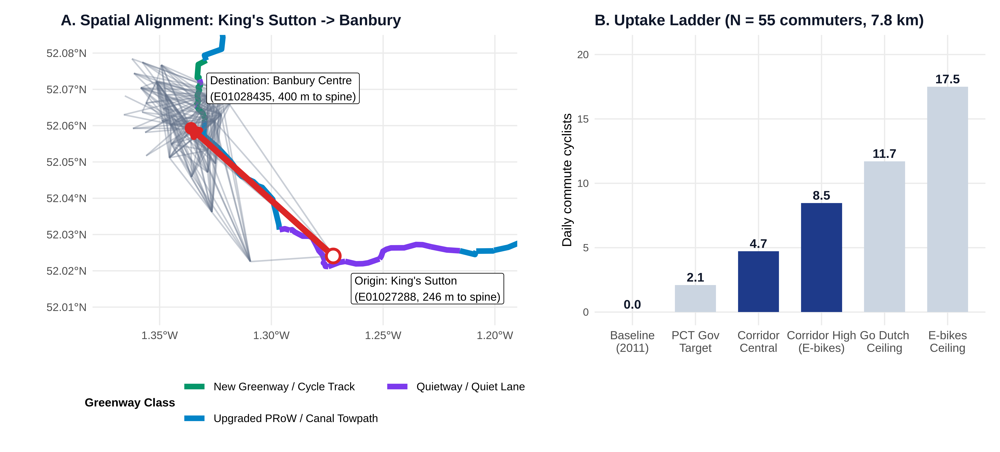

| # | Current Prototype Implementation | Economic / Appraisal Risk | Required Upgrade |
|---|---|---|---|
| 1 | Ad-hoc commute uplift (Phase 2): heuristic proximity multipliers (+35% cyclists; up to 7.5% car shift) | Violates joint modelling-valuation alignment: demand does not respond to the same GC attributes valued in appraisal. | Anchor uptake in a transparent GC / logistic propensity specification with corridor-exposure attenuation (omega_ij). |
| 2 | Unseparated leisure uplift (Phase 4): hardcoded trail (5.0x vs 2.5x) and campsite weights without separating diversion vs generation | Risks over-crediting leisure generation and mixes Exercise & Pleasure (VTT = 0) with Other Non-Work Utility. | Segment outputs into TAG’s four active-mode trip purposes and separate route reassignment from net generation. |
| 3 | Static steady-state flows: single daily flow; AMAT applies 100% demand in Year 1 plus 5-yr physiological health lag | Overstates PVB by 10-25% if real-world uptake builds over 3-8 years. | Convolve an explicit Bass behavioural adoption S-curve with AMAT’s 5-year physiological health lag over 40 years. |
| 4 | Census 2021 lockdown distortion: Phase 2 used March 2021 OD matrices (~31% WFH) | Distorts inter-town commuting patterns along rural corridors. | Benchmark against 2011 Census OD (pre-COVID, PCT-compatible), then apply a post-COVID hybrid-working scalar. |
| 5 | Unbridged demand-to-AMAT schema: link flows omit OD trip lengths, prop_on_scheme, diversion shares, and e-bike splits | Economists cannot populate AMAT or TATE3030 without ad-hoc post-processing. | Export a formal 4-table hand-off schema with built-in double-counting checks. |
Active Travel Uptake Modelling: Technical Appendix
Prototype Audit, Model Equations, Diagnostics & Data Contract
This technical appendix accompanies the Oxfordshire–Uxbridge Decision Brief. It documents the audit of existing railactive prototype scripts, the full PCT logistic and temporal ramp-up equations, supplementary corridor diagnostics, and the standardised 4-table hand-off schema for economic appraisal.
1 Audit of Existing RailActive Prototype Work
Before specifying the appraisal-ready pipeline, we audited analytical outputs across railactive/pipeline, railactive/hs2cycle, and railactive/amat:
- Harmonised corridor alignment (
north_south_corridor_v2.json, v0.5.2): 805.6 km preferred North–South Greenway spine (385.7 km core HS2 alignment plus Avenue Verte and Stoke–Birkenhead branches) with a 3-tier status taxonomy (preferred,alternative,superseded) and civil-asset classes (Repurposed HS2 TCR,HS2 delivered greenway,Dual Use MATs). - Multi-purpose network assignment (
pipelinePhases 1–4): Splicing the preferred greenway into a 1.72M-link corridor network in Rust/CSISnetassign(with DEM gradients capped at \(\pm 2\%\) on engineered alignments) and validating against 7,219 cycling and 1,439 walking counters lifted baseline cycling fit from \(R^2_{\log 10} = 0.352\) (commute-only) to \(0.676\) (56.2%within \(2\times\)), and walking fit from \(-0.177\) to \(0.488\). Phase 2 separated route diversion (+3,175bike pkm/day) from induced/shifted commute demand (+4,953bike pkm/day); Phase 4 lifted spine cycling from86.7to132.3riders/day (+52.6%). - Verified AMAT engine (
railactive/amat): Pure base-R DfT AMAT implementation (May 2026 TAG / 2023 prices) matching the official Clifton Road worked example to £0.00 across every stream (BCR = 2.840169).
Five structural prototype gaps must be resolved before full-corridor business-case modelling (Table 1):
2 PCT Logistic Propensity Specification
Under Random Utility Maximisation (RUM), commute cycling share \(p_{ij}\) on \((i, j)\) follows a logistic function of utility difference \(\Delta V_{ij} = -\lambda\,(GC^{\text{cycle}}_{ij} - GC^{\text{alt}}_{ij})\):
\[ \text{logit}\bigl(p_{ij}\bigr) = \ln\!\left(\frac{p_{ij}}{1 - p_{ij}}\right) = \alpha(q_{ij}) + f(d_{ij},\, g_{ij}) \tag{1}\]
In the UK Propensity to Cycle Tool (Lovelace et al. 2017), calibrated on 2011 Census OD flows across England and Wales, the baseline distance–hilliness decay function for fastest-route distance \(d_{ij}\) (km) and average gradient \(g_{ij}\) (%) is:
\[ \begin{aligned} \text{logit}\bigl(p^{\text{base}}_{ij}\bigr) &= -3.818 - 0.652\,d_{ij} + 2.084\sqrt{d_{ij}} + 0.00878\,d_{ij}^2 \\ &\quad - 0.256\,g_{ij} + 0.0199\,d_{ij}g_{ij} - 0.123\sqrt{d_{ij}}\,g_{ij} \end{aligned} \tag{2}\]
Area-wide transformation to Go Dutch shifts the infrastructure-quality intercept (\(\Delta \alpha_{\text{Dutch}} = +2.552\), with slope term \(-0.079\,d_{ij}\)), while E-bikes additionally attenuates distance and gradient exertion penalties \(e(t)\) (Nellthorp et al. 2026, sec. 4.2.3).
3 Supplementary Corridor & Worked-Example Diagnostics
| Corridor Classification | Links | Length (km) | Share (%) |
|---|---|---|---|
| Repurposed HS2 TCR | 87 | 21.72 | 19.3% |
| Upgrade PROW | 25 | 19.51 | 17.3% |
| New Greenway | 25 | 19.31 | 17.2% |
| Local Road Quietway | 34 | 18.64 | 16.6% |
| Existing routes | 18 | 13.43 | 11.9% |
| Quiet Lane | 19 | 8.36 | 7.4% |
| Canal Towpath Upgrade | 8 | 7.17 | 6.4% |
| Main Road-Cycle tracks | 17 | 3.98 | 3.5% |
| HS2 delivered greenway | 1 | 0.34 | 0.3% |

| Desire Line | Dist (km) | Slope (%) | N | Car | Exposure | Base | Central | High | Go Dutch |
|---|---|---|---|---|---|---|---|---|---|
| King’s Sutton -> Banbury | 7.84 | 1.50 | 55 | 62% | 0.81 | 0 | 4.7 | 8.5 | 11.7 |
| Weston Turville -> Aylesbury | 5.67 | 0.79 | 32 | 72% | 0.82 | 0 | 4.9 | 7.0 | 11.9 |
| Wendover -> Aylesbury | 9.16 | 1.17 | 25 | 72% | 0.69 | 0 | 1.6 | 3.0 | 4.7 |
| Denham -> Uxbridge | 4.29 | 0.96 | 13 | 54% | 0.65 | 1 | 2.5 | 3.1 | 5.5 |
4 Temporal Adoption & Health-Lag Equations
Cumulative behavioural adoption \(r(t) \in [0, 1]\) at \(t\) years post-opening follows a Bass diffusion S-curve (Bass 1969) with innovation parameter \(p\) and imitation parameter \(q\):
\[ r(t) = \frac{1 - e^{-(p + q)t}}{1 + \frac{q}{p}\,e^{-(p + q)t}} \tag{3}\]
In appraisal year \(y \ge oy\) (mid-year \(t_y = y - oy + 0.5\)), daily trips equal:
\[ \Delta T_y = \Delta T^{*} \cdot r(t_y) \cdot (1 + g_{\text{bg}})^{\min(y - oy,\, 20)} \tag{4}\]
where \(\Delta T^{*}\) is steady-state uptake and \(g_{\text{bg}} = 0.0075\) is AMAT’s annual background growth rate. Convolving annual conversion cohorts \(\Delta r_j = r(t_j) - r(t_{j-1})\) with AMAT’s 5-year linear physiological mortality lag gives the effective health-benefit share \(H^{\text{eff}}_k\) in operational year \(k\):
\[ H^{\text{eff}}_k = \sum_{j=1}^{k} \Delta r_j \cdot \min\!\bigl(1,\; 0.2\,(k - j + 1)\bigr) \tag{5}\]
Sensitivity profiles evaluated in the main brief use \((p=0.22, q=0.70)\) for Fast (3-yr), \((p=0.10, q=0.55)\) for Central (5-yr), and \((p=0.05, q=0.35)\) for Slow (8-yr) maturity.
5 Standardised Demand-to-AMAT Output Contract
To bridge spatial demand outputs cleanly into railactive/amat, TAG worksheets, and ATE’s forthcoming TATE3030 tool without manual spreadsheet post-processing, the pipeline exports four standardised tables:
| Output Dataset | Granularity | Key Fields & Units | Economic Appraisal Consumer |
|---|---|---|---|
| 1. OD Uptake (od_uptake.parquet) | OD pair x Purpose x Mode x Scenario | o_id, d_id, section_id, rf_dist_km, slope_pct, omega_corr, prop_on_scheme, trips_base, trips_with, trips_new, divert_car, divert_pt, divert_walk, induced_share, delta_met_wk | TAG Unit A5.4 MECs (car-km displaced), TATE3030 MET-hours, Rule-of-a-Half dCS |
| 2. Link Flows (link_flows.parquet) | Network link x Section x Scenario | link_id, gw_id, section, class, length_km, infra_base, infra_prop, flow_base, flow_diverted, flow_induced, pkm_base, pkm_with, grade_pct, lts_base, lts_prop | Link Journey Ambience (dRate x Time on Scheme), external casualty costs, phasing |
| 3. Annual Profile (annual_demand.csv) | Section x Year (2030-2069) x Purpose x Mode | section, year, ramp_share, health_eff, trips_exist_yr, trips_new_yr, vkm_saved_yr, met_hrs_yr | 40-yr discounted PVB stream (3.5% transport / 1.5% health) with ramp-up & growth |
| 4. AMAT Inputs (amat_inputs.csv) | Section (or Route Case) x Scenario | amat_run() args: cycle_trips_without, cycle_trips_with, cycle_trip_km, cycle_prop_on_scheme, cycle_current_infra, cycle_proposed_infra, annual_days, car_divert, prop_employed, ramp_pv_t, ramp_pv_h | Automated batch appraisal via railactive/amat (zero manual spreadsheet entry) |
6 References
Bass, Frank M. 1969. “A New Product Growth for Model Consumer Durables.” Management Science 15 (5): 215–27. https://doi.org/10.1287/mnsc.15.5.215.
Lovelace, Robin, Anna Goodman, Rachel Aldred, Nikolai Berkoff, Ali Abbas, and James Woodcock. 2017. “The Propensity to Cycle Tool: An Open Source Online System for Sustainable Transport Planning.” Journal of Transport and Land Use 10 (1): 505–28. https://doi.org/10.5198/jtlu.2016.862.
Nellthorp, John, Thijs Dekker, and Richard Batley. 2026. Active Mode Benefits: Theoretical Framework. Report to Active Travel England. Institute for Transport Studies, University of Leeds. https://www.gov.uk/government/publications/benefits-of-walking-wheeling-and-cycling-theoretical-framework.